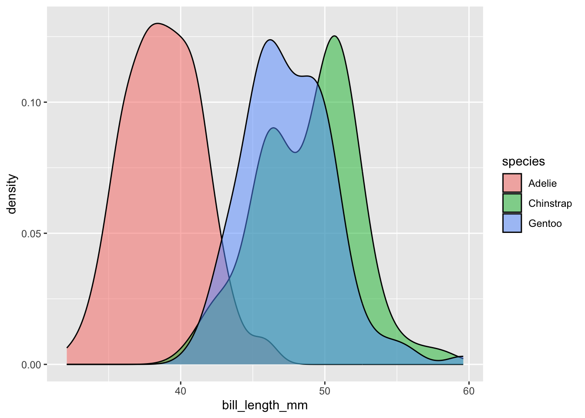
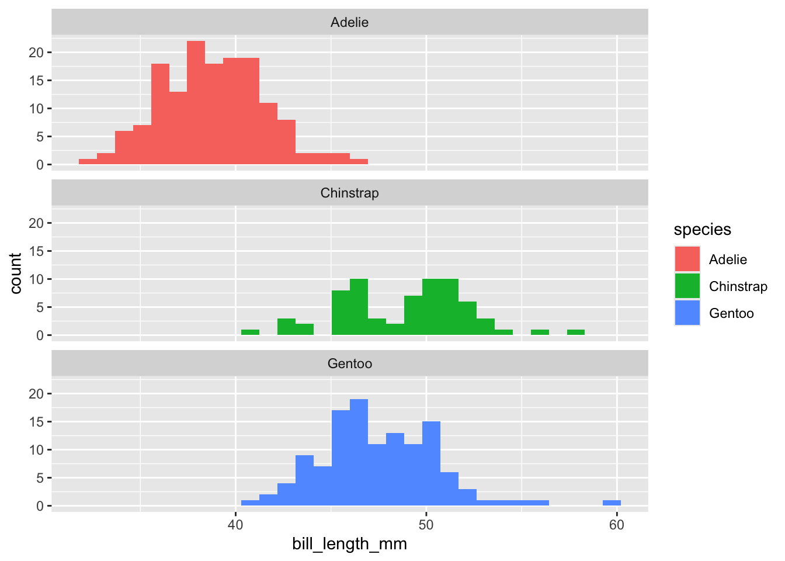
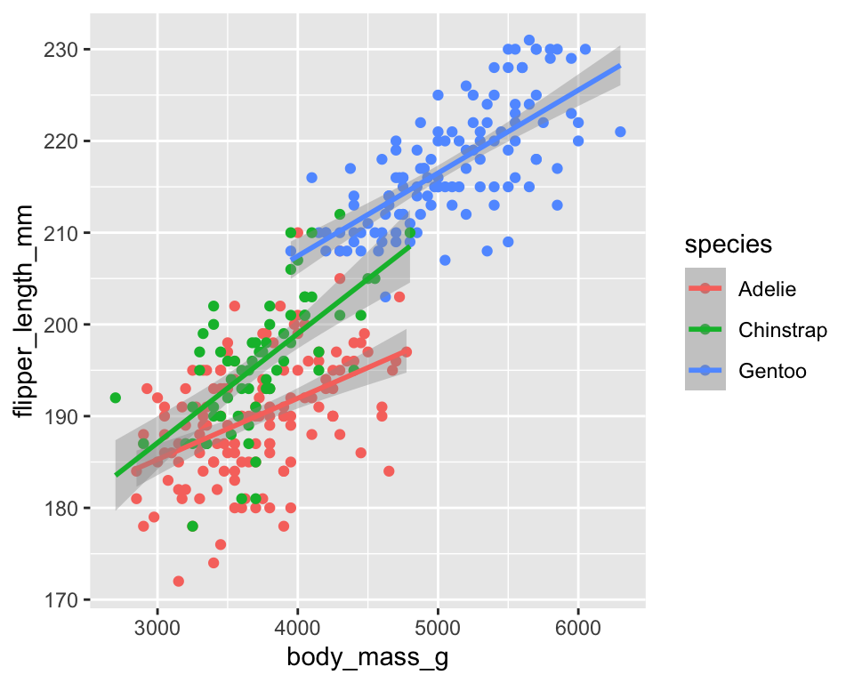
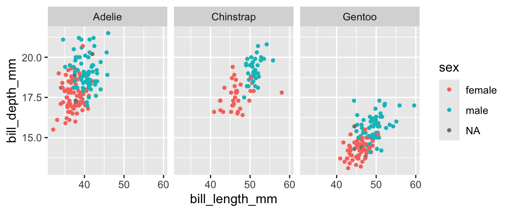
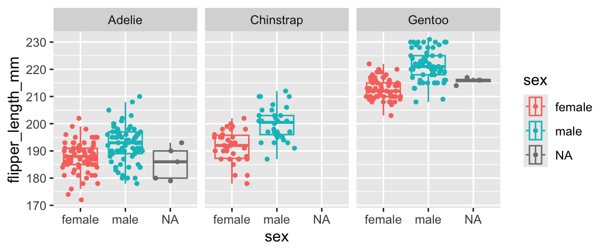
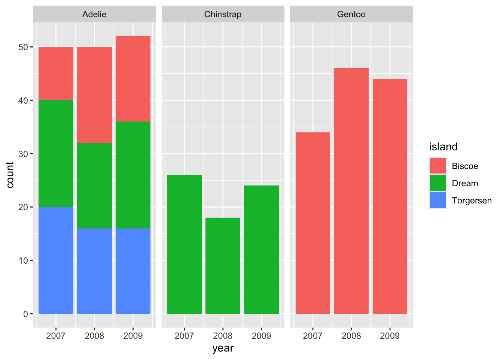

Lab 3: Displaying data visualization on a website
Goals for today
Continue to explore and practice graphing with ggplot
Continue to explore and practice website setup and styling with GitHub Pages
Integrate 1) and 2) to publish your data visualization on a website
Exercise 1: Explore the penguins dataset with ggplot
(40 mins)
General instructions
Today, we’ll use ggplot to visually explore patterns in morphological traits in three different species of penguin. This data were collected and made available by Dr. Kristen Gorman and the Palmer Station, Antarctica LTER, and were compiled by Dr. Allison Horst and colleagues.

Step 1: Get to know our data
Take a few minutes to explore the palmerpenguins homepage. (Note that this website is built using GitHub Pages!)
Step 2: Set up a GitHub-linked RStudio project to work in
Please create a new GitHub repo in your personal account named
penguins, clone the repo to your computer, and work on your
data exploration in this new repo.
Open an .Rmd template file (File -> New File -> R Markdown…). Delete the boilerplate text under the setup chunk (you can keep that chunk) and make four level 2 headers:
- Data
- Single trait distribution
- Relationship between multiple traits
- Sexual dimorphism
Under the Data header, add a short description of the dataset we’re using today and a picture of penguins.
Step 3: Load the data
Today’s dataset is provided in the R package
palmerpenguins.
Let’s start by installing the palmerpenguins package so
we can access the data. After installing the package we need to load it
with the library() function. We also need to load the
tidyverse package because it contains ggplot.
library(palmerpenguins) #install.packages("palmerpenguins")
library(tidyverse)Then, let’s explore the penguins dataset. You might
e.g. want to use functions like View(), dim(),
colnames() , and ?. You will see that the
dataset includes the following variables:
| Column names |
|---|
| species |
| island |
| bill_length_mm |
| bill_depth_mm |
| flipper_length_mm |
| body_mass_g |
| sex |
| year |

Step 4: Explore patterns in the data
In groups or on your own, go and explore patterns in the data with ggplot. You can look back to our lecture 6 notes or the RStudio ggplot cheatsheet for inspiration.
We provide one possible solution for each question, but we highly recommend that you don’t look at them unless you are really stuck.
The distribution of a single trait
First, under the “Single trait distribution” header, add some text and code chunks to explore the distribution in any one of the morphological traits in the penguin dataset.
For example, what is the lowest and highest bill lengths do penguins in this dataset have? Do different species have different bill lengths? How much do they overlap?
One possible solutionclick to expand
penguins %>%
ggplot() +
geom_density(mapping = aes(x = bill_length_mm, fill=species), alpha=0.5)
penguins %>%
ggplot() +
geom_histogram(mapping = aes(x = bill_length_mm, fill=species)) +
facet_wrap(~species, nrow=3)
The relationship between multiple traits
Then, under the “Relationship between multiple traits” header, add
some text and code chunks to explore the relationship between different
morphological traits in the penguins dataset.
For example, what is the relationship between body mass and flipper length in penguins in this dataset? Does this relationship differ between species? Given the same body mass, which species of penguins tend to have the longest flippers?
One possible solutionclick to expand
penguins %>%
ggplot(mapping = aes(x = body_mass_g, y=flipper_length_mm, color=species)) +
geom_point() +
geom_smooth(method="lm")
The level of sexual dimorphism
Lastly, under the “Sexual dimorphism” header, add some text and code
chunks to explore the level of sexual dimorphism in different
morphological traits in the penguins dataset.
For example, what traits are sexually dimorphic in the
penguins dataset? Is the level of sexual dimorphism the
same in all three penguin species?
click to expand
penguins %>%
ggplot(mapping = aes(x = bill_length_mm, y=bill_depth_mm, color=sex)) +
geom_point(size=1) +
facet_wrap(~species)
penguins %>%
ggplot(mapping = aes(x=flipper_length_mm, y=sex, color=sex)) +
geom_boxplot(outlier.alpha = 0, alpha=0) +
geom_jitter(width = 0, size=1) +
coord_flip() +
facet_wrap(~species)
Free exploration
If you have finished these suggested activities ahead of time, please feel free to explore other aspects of the data. For example, you can look at any temporal trend in the dataset, or patterns within the same species across different islands.
E.g., Sample size in different years and islandsclick to expand
penguins %>%
ggplot() +
geom_bar(mapping = aes(x=year, fill=island)) +
facet_wrap(~species)
Recap (10 minutes)
Share your findings, challenges, and questions with the class.
Short break (10 minutes)
Exercise 2a: Publish your data visualizations on a website and explore different website styling options (45 minutes)
Exercise 2b: Publish your personal academic/professional website and explore different website styling options (45 minutes)
General instructions
For this exercise, you will build a GitHub Pages website as described
in Lecture
5 and display our penguins data visualization result on
this website. For this website, you will each build your own, so there
is no need to invite a collaborator. Just make sure your repo is public
to be able to build the site.
Suggested activities for Exercise 2a
You can split your RMarkdown file into separate files, so each section (i.e. data, life expectancy, fertility, infant mortality) becomes a separate page and can get it own tab. You can e.g. split your content into files named
index.Rmd,single_trait.Rmd,multiple_traits.Rmd, andsexual_dimorphism.Rmd, and the add those as tabs in a_site.ymlfile, as described in the lecture notesYou can then consider adding a table of contents and changing the styling (theme) of your website, as described here
Remember that it may take a little while for your website to update
after you have pushed your changes to GitHub, but you can always check
the current build (after running rmarkdown::render_site())
in your Viewer pane in RStudio.
Recap (10 minutes)
Share your findings, challenges, and questions with the class.
END LAB 3